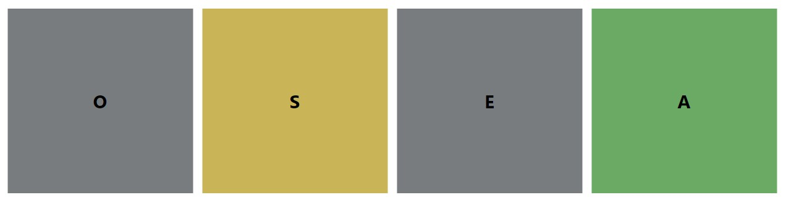

Antes de comenzar a jugar, usted debe pensar una palabra que cumpla los siguientes requisitos:
Ahora el ordenador va a jugar a adivinar su palabra. Para ello, escribirá una palabra, y tú deberás colorear las letras según la siguiente leyenda:
Verde: La letra está en esa exacta posición.
Amarillo: La letra está en la palabra, pero no en esa posición.
Negro: La letra no está en la palabra.
Por ejemplo, si has pensado en la palabra "CASA", y el ordenador prueba con "OSEA", deberás colorearla así: 
Para colorear las casillas basta con hacer click encima de ellas (1 click → verde, 2 clicks → amarillo, 3 clicks → negro).
Una vez coloreadas las cuatro casillas, pulsa el botón ¡Prueba otra vez! para que el ordenador pruebe con otra palabra.
Cuando el ordenador acierte la palabra, pulsa el botón ¡Sí, ésta es mi palabra!, y podrás volver a jugar.